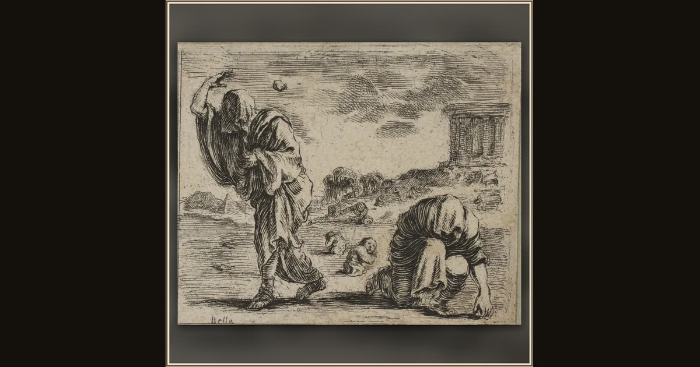

Deucalion et Pyrrha
Stefano della Bella · 1644 · met
Deucalion and Pyrrha gather and cast stones in della Bella’s etching; the Athenian asks his companions to imagine the survivors of a devastating flood (677a). Explore its place in Plato's Dialogues, Laws · Book III, section 4.